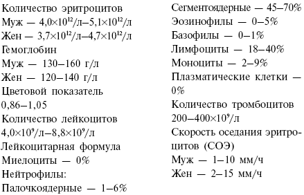

Оцените результаты анализов

В списке необходимых анализов среди первых будет стоять общий анализ крови. Быть может, он не самый важный для того, чтобы определить, подходит ли вам низкоуглеводная диета Кремля, но без него не обходится ни одно обследование. Итак, что же такое общий анализ крови? О чем могут поведать капли крови, которые «высосут» стеклянной трубочкой из пальца или шприцем из вены? Общий клинический анализ крови включает определение следующих показателей: концентрации гемоглобина, количества эритроцитов и других показателей красной крови, количества лейкоцитов, количества тромбоцитов, подсчет лейкоцитарной формулы (процентное отношение различных видов лейкоцитов), скорости оседания эритроцитов (СОЭ).
Распространен и укороченный анализ крови («тройка») – исследование количества гемоглобина, подсчет числа лейкоцитов и определение СОЭ. Его используют наиболее часто. Вам его будет достаточно, чтобы врач смог вынести вердикт: можно вам применять на себе низкоуглеводную диету или нет.
В лабораторной практике исследуют капиллярную кровь (ее получают путем укола IV пальца левой руки) или венозную кровь (из локтевой вены). Для забора капиллярной крови используют специальные иглы – скарификаторы (это те самые «перышки», которыми медсестра прокалывает многострадальный пальчик). Кожу на месте укола протирают ватным тампоном, смоченным спиртом. Укол производят сбоку, где более густая капиллярная сеть, на глубину 2–3 мм в зависимости от толщины кожи.
Обычно результаты анализов передают из лаборатории вашему лечащему врачу. Но вы и сами можете попробовать расшифровать их. В норме общий анализ крови у взрослого человека выглядит так («муж» – для мужчин, «жен» – для женщин):

Я привожу здесь эти цифры больше для развлечения и повышения уровня вашей общей эрудиции, но никак не для самодиагностики. В различных лабораториях некоторые показатели могут иметь другие границы нормы и единицы измерения. Не делайте серьезных самостоятельных выводов о полученных результатах лабораторного исследования. Обязательно проконсультируйтесь с врачом.
При получении анализа крови в нем характеризуются 4 блока: красная кровь – эритроциты, гемоглобин, цветовой показатель; белая кровь – лейкоциты, лейкоцитарная формула (соотношение различных форм лейкоцитов в %); тромбоциты; скорость оседания эритроцитов (СОЭ). Я расскажу, на что стоит обратить внимание тем, кто собирается придерживаться диеты Кремля.
Лейкоциты крови выполняют в организме различные функции. Нейтрофилы и моноциты (это разновидности лейкоцитов) составляют неотъемлемую часть защитной системы организма. Нейтрофильные лейкоциты являются главными клетками острого воспаления, а моноциты рассматривают как центральное клеточное звено хронического воспаления. Повышение числа эозинофилов и базофилов наблюдается при аллергических реакциях, бронхиальной астме, гельминтозах (глистах), детских инфекциях (скарлатине) и т. д. Лимфоциты являются главными клеточными элементами иммунной системы организма. Основные функции иммунной системы состоят в способности отличать свои клетки от чужих и образовывать к ним защиту – антитела.
Лейкоцитоз (увеличение числа лейкоцитов в крови выше нормального уровня) может быть и в норме. Увеличение числа лейкоцитов происходит после приема пищи, физической работы, приема горячих и холодных ванн, в период беременности, родов, в предменструальный период. Если их уровень не превышает 10–12x109/л – все нормально. Лейкоцитоз как проявление болезни более характерен для острых инфекций, чем для хронических. Причем при легких формах его может не быть или он выражен умеренно. В то время как тяжелые инфекции сопровождаются значительным лейкоцитозом. Сниженное или нормальное общее количество лейкоцитов в крови с появлением молодых форм нейтрофилов (миелоциты и др.) при инфекциях указывают либо на раннюю стадию процесса, либо на низкую сопротивляемость организма. Скорость оседания эритроцитов (СОЭ) – свойство крови осаждаться на дне сосуда при сохранении ее в несвертывающемся состоянии. Иногда употребляется термин РОЭ – реакция оседания эритроцитов. СОЭ и РОЭ – это одно и то же. Увеличение этого показателя наблюдается при всех состояниях, сопровождающихся воспалением.
Воспалительный процесс в общем-то не является противопоказанием для низкоуглеводной диеты. Однако если воспалительный процесс идет в почках – это уже совсем другой разговор. В этом случае наша диета противопоказана.
Несколько полезных советов, так сказать, медицинских тонкостей, о которых сами пациенты часто не знают. Не рекомендуется сдавать кровь сразу после физической нагрузки, внутривенного введения медикаментов, физиотерапевтических процедур, рентгенологического исследования и т. д. Лучше проводить исследование натощак, а повторные анализы желательно выполнять в одни и те же часы, поскольку клеточный состав крови подвержен колебаниям на протяжении суток.
Биохимический анализ кровиБиохимический анализ крови – это лабораторный метод исследования, который отражает функциональное состояние различных органов (печени, почек, поджелудочной железы и др.) и систем. Кровь на биохимию берут из вены. Забор крови осуществляется натощак, после 12-часового голодания.
Стандартный биохимический анализ крови обычно включает определение следующих показателей: амилаза сыворотки, общий белок, билирубин, железо, калий, кальций, креатинин, КФК (креатинфосфокиназа), ЛДГ (лактатдегидрогеназа), липаза, магний, мочевая кислота, натрий, холестерин, триглицериды, трансаминазы, фосфор и др. В рамках диеты Кремля нас интересуют в первую очередь уровни холестерина, глюкозы, фосфора, кальция и мочевой кислоты.
Повышение уровня глюкозы в крови говорит о нарушении обмена углеводов и свидетельствует о развитии сахарного диабета. Это не является противопоказанием для низкоуглеводной диеты, наоборот, эта диета может снижать сахар крови. Но вашему врачу необходимо знать этот показатель, чтобы контролировать, как он будет меняться с изменением характера вашего питания.
По содержанию в крови холестерина, липопротеидов, триглицеридов можно судить о жировом обмене. Если уровень холестерина у вас повышен, надо скорректировать диету особым образом. Ограничьте овощи и фрукты, но полностью от них не отказывайтесь. Выбирайте нежирные сорта мяса и рыбы. Не употребляйте почки, мозг, печень. Не увлекайтесь яйцами. В этих продуктах высокий уровень холестерина, поэтому они не для вас. В остальном диета кремлевских политиков вам подходит. Не забывайте только регулярно (хотя бы каждые полгода) проверять уровень холестерина в крови.
Изменение концентрации фосфора и кальция свидетельствует о нарушении минерального обмена. Для нас это важно, потому что дисбаланс фосфора и кальция может свидетельствовать о заболеваниях почек. Также это может быть при некоторых гормональных нарушениях, у детей – при рахите. Если данный показатель у вас отклоняется от нормы, советую более тщательно обследовать почки (сделать ультразвуковое исследование и дополнительные лабораторные исследования).
При заболеваниях почек может уменьшаться концентрация белка в крови. Уменьшение этого показателя также встречается при заболеваниях печени и голодании.
Повышение уровня креатинина характерно для почечной недостаточности.
Изменение концентрации калия, натрия и хлора неблагоприятно сказывается на работе внутренних органов, особенно сердца.
Повышение концентрации КФК-МВ, ЛДГ наблюдается при инфаркте миокарда.
Повышение таких показателей, как АЛТ, АСТ, ГГТ, щелочная фосфатаза, холинэстераза, говорят о нарушениях функции печени.
Изменение уровня амилазы свидетельствует о патологии поджелудочной железы.
Показатели билирубина характеризуют работу печени.
С-реактивный белок (СРБ) является самым четким индикатором острого воспалительного процесса при различных заболеваниях.
Оценив биохимический анализ крови, ваш врач сможет дать вам совет относительно дальнейших исследований или обрадовать вас вердиктом: «Все в порядке, худейте на здоровье!»
Общеклинический анализ мочиТакже вам необходимо будет сдать на анализ мочу. Это, пожалуй, самый безболезненный метод исследования. И выполняется он достаточно просто. Для обычного анализа достаточно собрать первую утреннюю порцию мочи в посуду из бесцветного стекла с плоским дном. Эта посуда предварительно должна быть тщательно вымыта. Перед собиранием мочи необходимо аккуратно обмыть наружные половые органы (особенно женщинам). Женщинам во время менструации мочу на исследование берут с помощью катетера. Вам это, конечно, ни к чему. Так что подождите, пока пройдут «критические дни». Если вы не можете сразу отнести мочу на анализ, лучше хранить ее в холодильнике.
Анализ мочи многое может рассказать о вашем организме, уж о почках-то точно. Данное исследование не только отражает состояние и функцию органов мочеполовой системы, но и позволяет судить о наличии некоторых патологических процессов в других органах и системах – болезни печени, расстройства обмена веществ и др. Общий анализ мочи позволяет оценить функцию почек (для нас это наиболее важно). Моча образуется в почках и состоит из растворов органических и неорганических веществ. Сами почки не вырабатывают новых веществ, а только выделяют вещества, уже содержащиеся в крови. Постоянство состава крови обеспечивается главным образом за счет выделительной функции почек. При различных заболеваниях в кровь поступают всевозможные патологические продукты обмена, которые, выделяясь с мочой, могут помочь в диагностике патологического процесса.
При общеклиническом анализе мочи оценивают ее физические свойства: цвет, прозрачность, запах, реакцию, относительную плотность. Также определяют содержание некоторых веществ: белка, глюкозы, гемоглобина, желчных пигментов, ацетона, кетоновых тел, уробилина и др. Оценивая результаты анализа, проводят и микроскопическое исследование осадка, при котором могут быть выявлены лейкоциты, эритроциты, клетки эпителия из различных отделов мочевыделительной системы, различные цилиндры, кристаллы солей, бактерии и прочие ингредиенты.
О заболевании почек свидетельствует снижение удельного веса и наличие в моче белка.
Если в моче много кристаллов, есть основания заподозрить мочекаменную болезнь (тогда диета Кремля вам не подходит).
При сахарном диабете с мочой выделяется глюкоза.
Темная моча, с большим количеством билирубина, наблюдается при гепатитах.
И, пожалуй, все знают, что большое количество лейкоцитов в моче будет при воспалительном процессе в органах мочеполовой системы.
При обнаружении отклонения от нормы какихлибо показателей мочи, необходимо провести дальнейшее исследование почек. Если врач обнаружит у вас заболевание почек, диету кремлевских политиков вам соблюдать нельзя.
emm
Не ленитесь и сдайте все необходимые анализы. Если есть возможность, сделайте УЗИ почек. Поверьте, это в любом случае пойдет вам на пользу. Считайте, что новая эффективная диета – дополнительный повод вспомнить и позаботиться о собственном здоровье. К тому же, проведя минимальные исследования, вы сможете со спокойной душой худеть и знать, что это идет вам только на пользу. Придерживаясь низкоуглеводной диеты, минимум раз в полгода обязательно проходите медосмотр и сдавайте необходимые анализы. Вообщето это должен делать любой человек, независимо от того, какой диеты он придерживается. Желаю вам здоровья и стройности.